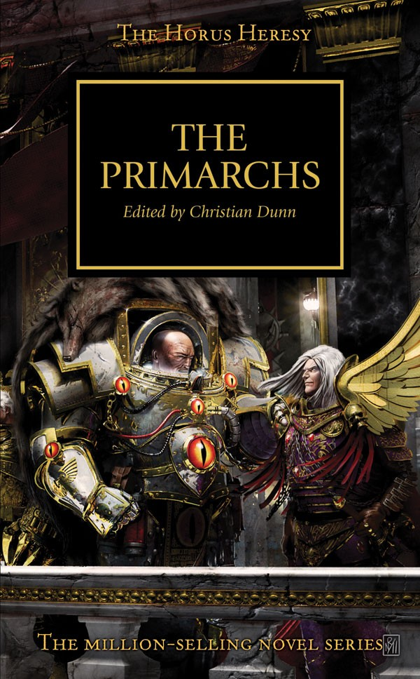

THE LION

Author: Gav Thorpe
Format: Novella
Amid their campaign against the Night Lords, the Dark Angels are caught between two brother Legions and a daemonic threat. Lion El'Jonson must decide whom to trust before the conflict widens.
Listed in: The Primarchs.
Introduction reviewed against Black Library’s description on 2026-09-27. The publisher page may contain spoilers.
Publication facts: publisher source, checked 2026-09-26.
Open this work in the interactive Archive to track reading progress and explore related works.
Take the three-question memory check for this work. The quiz contains story spoilers.